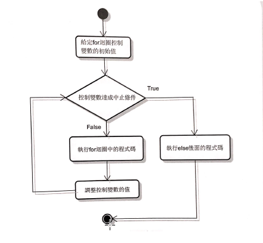

處理有次序性且知執行次數的問題
執行條件:
控制變數的設定十分重要
結構如下:
For expression in iterable:
欲執行的程式碼1….
Else:
欲執行的程式碼2 ….
如果expression不是變數，for迴圈就是變數序列。因為iterable是迭代，所以這裡要放可以循序迭代的物件；而else是選擇性設定，之後的程式碼會在迴圈終止後被執行。
!!!!!!!!!!!!以下為for迴圈流程圖!!!!!!!!!!!!

Range------在for迴圈中常被使用的函數
|
函數 |
描述 |
|
Range({start},stop{,step}) |
建立整數序列 |
Range()輸入stop就是停止條件；
start,step為選擇性選項。Start起始預設值為0；step為預設1的迭代數字
range()傳回的資料是range的物件，通常會將其轉乘其他容器資料型態Ex:list、tuple
在for迴圈中使用range()，是將range()放入iterable。注意range()裡面的step可以設定為正、負整數
示範程式碼
01 print(range(10)) #直接印出range物件，使用意義不大
02
03 Print(list(range(10))) #range物件轉為list
04 Print(list(range(3,15,))) #起始值為3，終止值為15，迭逮數字為4
05 (list(range(10,-14,-3))) #起始值0，終止值為-14，迭逮數字為-3
06
07 tuple(range(8,12,6))) #range物件轉為tuple
執行結果à
>>>
Range(0,10)
【1,2,3,4,5,6,7,8,9】
【3,7,11】
【10,7,4,1,-2,-5,-8,-11】
(-7,-2,3,8,13,18,23)
>>>
以(list(range(10,-14,-3)))為例，可以發現range()終止值沒有被輸出
初始值迭代≦終止值à迭代結束à回傳print()進行列印
(若迭代為正數，迭代數值≧終止值à迭代結束